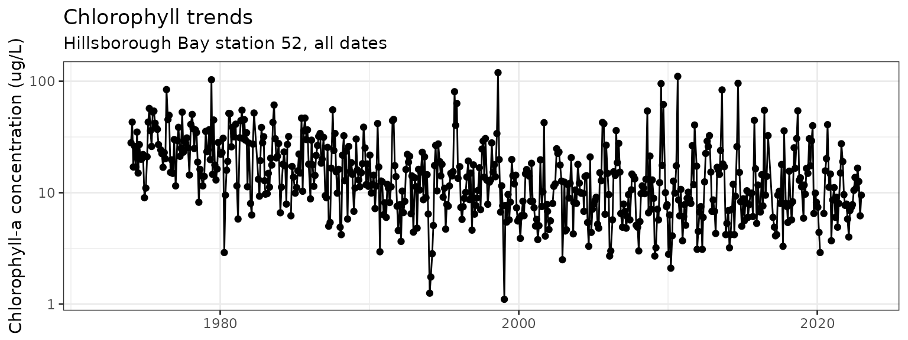
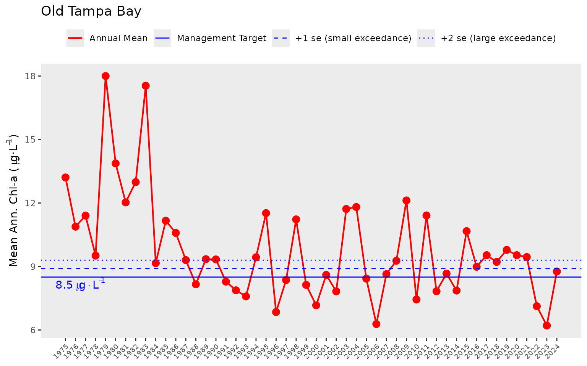
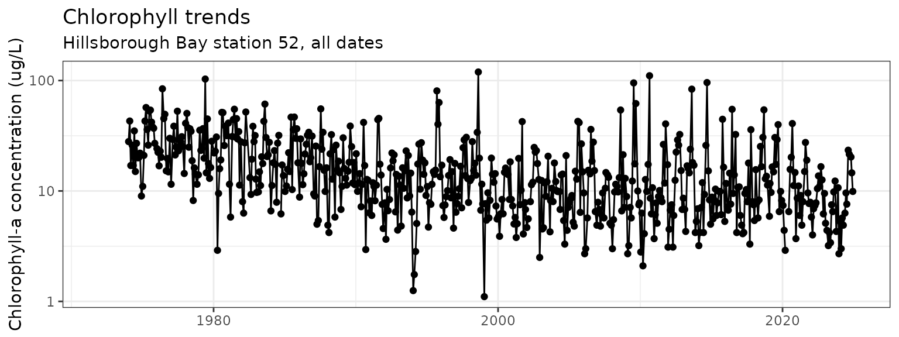
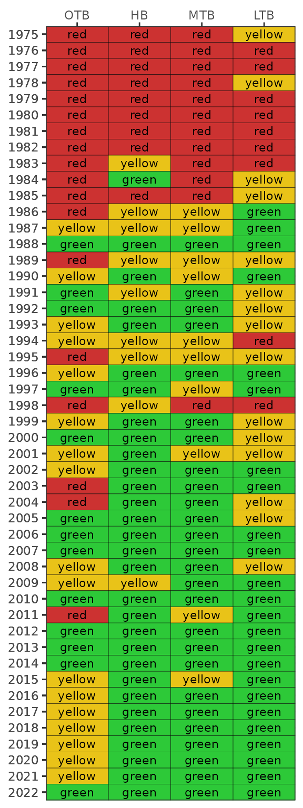
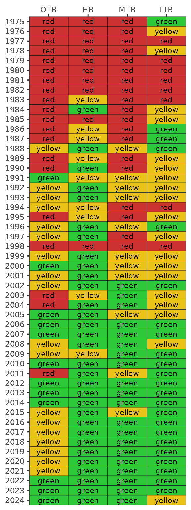
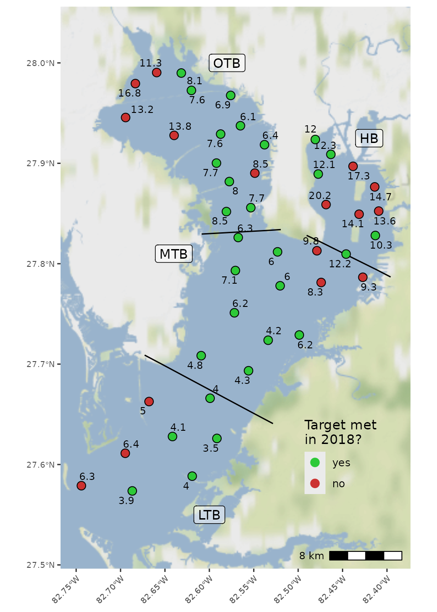

Background
Dashboard: https://shiny.tbep.org/wq-dash
This vignette provides an overview of the functions in tbeptools that can be used to work with water quality data in Tampa Bay. View the other vignettes for topical introductions to other reporting products (e.g., seagrasess, tidal creeks, etc.).
The environmental recovery of Tampa Bay is an exceptional success story for coastal water quality management. Nitrogen loads in the mid 1970s have been estimated at 8.2 million kg/yr, with approximately 5.5 million kg/yr entering the upper Bay alone [2]. Reduced water clarity associated with phytoplankton biomass contributed to a dramatic reduction in the areal coverage of seagrass [3] and development of hypoxic events, causing a decline in benthic faunal production [4]. Extensive efforts to reduce nutrient loads to the Bay occurred by the late 1970s, with the most notable being improvements in infrastructure for wastewater treatment in 1979. Improvements in water clarity and decreases in chlorophyll concentrations were observed Bay-wide in the 1980s, with conditions generally remaining constant to present day [5].
Tracking changes in environmental condition from the past to present day would not have been possible without a long-term monitoring dataset. Data have been collected monthly by the Environmental Protection Commission of Hillsborough County since 1974 [6,7]. Samples are taken at forty-five stations by water collection or monitoring sonde at bottom, mid- or surface depths, depending on parameter. The locations of monitoring stations are fixed and cover the entire Bay from the uppermost mesohaline sections to the lowermost euhaline portions that have direct interaction with the Gulf of Mexico. Up to 515 observations are available for different parameters at each station, e.g., nitrogen, chlorophyll-a, and secchi depth.
Data collected from the monitoring program are processed and
maintained in a spreadsheet titled
RWMDataSpreadsheet_ThroughCurrentReportMonth.xlsx at https://epcbocc.sharepoint.com/:x:/s/Share/EWKgPirIkoxMp9Hm_wVEICsBk6avI9iSRjFiOxX58wXzIQ?e=kAWZXl&download=1
(viewable here).
These data include observations at all stations and for all parameters
throughout the period of record. To date, there have been no systematic
tools for importing, analyzing, and reporting information from these
data. The tbeptools package provides was developed to
address this need.

Locations of long-term monitoring stations in Tampa Bay. The Bay is separated into four segments defined by chemical, physical, and geopolitical boundaries.
Read
The main function for importing water quality data is
read_importwq(). This function downloads the latest file if
one is not already available at the location specified by the
xlsx input argument.
First, create a character path for the location of the file. If one
does not exist, specify a desired location and name for the downloaded
file. Here, we want to put the file in the vignettes folder and name is
current_results.xls. Note that this file path is relative to the root
working directly for the current R session. You can view the working
directory with getwd().
xlsx <- 'vignettes/current_results.xlsx'Now we pass this xlsx object to the
read_importwq() function.
ecpdata <- read_importwq(xlsx)#> Error in read_importwq("empty") : file.exists(xlsx) is not TRUEWe get an error message from the function indicating that the file is
not found. This makes sense because the file doesn’t exist yet, so we
need to tell the function to download the latest file. This is done by
changing the download_latest argument to TRUE
(the default is FALSE).
ecpdata <- read_importwq(xlsx, download_latest = TRUE)#> File vignettes/current_results.xlsx does not exist, replacing with downloaded file...
#> trying URL 'https://epcbocc.sharepoint.com/:x:/s/Share/EYXZ5t16UlFGk1rzIU91VogBa8U37lh8z_Hftf2KJISSHg?e=8r1SUL&download=1'
length 24562051 bytes (23.4 MB)Now we get the same message, but with an indication that the file on
the server is being downloaded. We’ll have the data downloaded and saved
to the epcdata object after it finishes downloading.
If we try to run the function again after downloading the data from the server, we get the following message. This check is done to make sure that the data are not unnecessarily downloaded if the current file matches the file on the server.
ecpdata <- read_importwq(xlsx, download_latest = TRUE)#> File is current...Every time that tbeptools is used to work with the monitoring data,
read_importwq() should be used to import the data. You will
always receive the message File is current... if your local
file matches the one on the server. However, new data are regularly
collected and posted on the server. If
download_latest = TRUE and your local file is out of date,
you will receive the following message:
#> Replacing local file with current...The argument na indicates which fields in the downloaded
spreadsheet are treated as blank values and assigned to NA.
Any number of strings can be added to this function to replace fields
with NA values.
After the data are successfully imported, you can view them from the assigned object:
epcdata
#> # A tibble: 27,286 × 26
#> bay_segment epchc_station SampleTime yr mo Latitude Longitude
#> <chr> <dbl> <dttm> <dbl> <dbl> <dbl> <dbl>
#> 1 HB 6 2022-12-13 09:58:00 2022 12 27.9 -82.5
#> 2 HB 7 2022-12-13 10:15:00 2022 12 27.9 -82.5
#> 3 HB 8 2022-12-13 12:59:00 2022 12 27.9 -82.4
#> 4 MTB 9 2022-12-13 12:14:00 2022 12 27.8 -82.4
#> 5 MTB 11 2022-12-13 10:41:00 2022 12 27.8 -82.5
#> 6 MTB 13 2022-12-13 10:58:00 2022 12 27.8 -82.5
#> 7 MTB 14 2022-12-13 11:45:00 2022 12 27.8 -82.5
#> 8 MTB 16 2022-12-13 09:27:00 2022 12 27.7 -82.5
#> 9 MTB 19 2022-12-13 09:40:00 2022 12 27.7 -82.6
#> 10 LTB 23 2022-12-13 12:37:00 2022 12 27.7 -82.6
#> # ℹ 27,276 more rows
#> # ℹ 19 more variables: Total_Depth_m <dbl>, Sample_Depth_m <dbl>, tn <dbl>,
#> # tn_q <chr>, sd_m <dbl>, sd_raw_m <dbl>, sd_q <chr>, chla <dbl>,
#> # chla_q <chr>, Sal_Top_ppth <dbl>, Sal_Mid_ppth <dbl>,
#> # Sal_Bottom_ppth <dbl>, Temp_Water_Top_degC <dbl>,
#> # Temp_Water_Mid_degC <dbl>, Temp_Water_Bottom_degC <dbl>,
#> # `Turbidity_JTU-NTU` <chr>, Turbidity_Q <chr>, Color_345_F45_PCU <chr>, …These data include the bay segment name, station number, sample time,
year, month, latitude, longitude, station depth, sample depth, total
nitrogen, secchi depth, chlorophyll, salinity, water temperature,
turbidity, and water color. All other parameters can be included by
setting all = TRUE in read_importwq().
An import function is also available to download and format
phytoplankton cell count data. The read_importphyto()
function works similarly as the import function for the water quality
data. Start by specifying a path where the data should be downloaded and
set download_latest to TRUE. This function
will download and summarize data from the file
PlanktonDataList_ThroughCurrentReportMonth.xlsx on the EPC
website.
xlsx <- 'phyto_data.xlsx'
phytodata <- read_importphyto(xlsx, download_latest = T)#> File vignettes/phyto_data.xlsx does not exist, replacing with downloaded file...
#> trying URL 'https://epcbocc.sharepoint.com/:x:/s/Share/ETAfRQ5drmRHntDd1O8s3FQB180Fumed4nQ99w-OIVDxrA?e=eSmtxD&download=1'
length 12319508 bytes (11.7 MB)After the phytoplankton data are successfully imported, you can view them from the assigned object:
phytodata
#> # A tibble: 23,848 × 8
#> epchc_station Date name units count yrqrt yr mo
#> <chr> <date> <chr> <chr> <dbl> <date> <dbl> <ord>
#> 1 11 1975-07-23 Cyanobacteria /0.1mL 0 1975-07-01 1975 Jul
#> 2 11 1976-01-07 Cyanobacteria /0.1mL 1 1976-01-01 1976 Jan
#> 3 11 1977-01-05 other /0.1mL 1 1977-01-01 1977 Jan
#> 4 11 1977-04-20 other /0.1mL 1 1977-04-01 1977 Apr
#> 5 11 1977-04-20 Tripos hircus /0.1mL 1 1977-04-01 1977 Apr
#> 6 11 1977-07-13 other /0.1mL 12 1977-07-01 1977 Jul
#> 7 11 1978-01-11 other /0.1mL 16 1978-01-01 1978 Jan
#> 8 11 1979-02-08 other /0.1mL 1 1979-01-01 1979 Feb
#> 9 11 1979-05-02 Karenia brevis /0.1mL 1 1979-04-01 1979 May
#> 10 11 1979-05-30 other /0.1mL 1 1979-04-01 1979 May
#> # ℹ 23,838 more rowsThese data are highly summarized from the raw data file available
online. Cell counts (as number of cells per 0.1mL) for selected taxa are
summed for each station by quarters (i.e., Jan/Feb/Mar, Apr/May/Jun,
etc.). The quarter is indicated in the yrqrt column
specified by the starting date of each quarter (e.g.,
1975-07-01 is the quarter Jul/Aug/Sep for 1975). These data
are primarily used to support analyses in the water quality dashboard:
https://shiny.tbep.org/wq-dash/
Analyze
The functions anlz_avedat() and
anlz_avedatsite() summarize the station data by bay
segments or by sites, respectively. Both functions return annual means
for chlorophyll and light attenuation (based on Secchi depth
measurements) and monthly means by year for chlorophyll and light
attenuation. These summaries are then used to determine if bay segment
targets for water quality are met using the anlz_attain()
and anlz_attainsite() function.
Here we use anlz_avedat() to summarize the data by bay
segment to estimate annual and monthly means for chlorophyll and light
attenuation. The output is a two-element list for the annual
(ann) and monthly (mos) means by segment.
avedat <- anlz_avedat(epcdata)
avedat
#> $ann
#> # A tibble: 596 × 4
#> yr bay_segment var val
#> <dbl> <chr> <chr> <dbl>
#> 1 1974 HB mean_chla 22.4
#> 2 1974 LTB mean_chla 4.24
#> 3 1974 MTB mean_chla 9.66
#> 4 1974 OTB mean_chla 10.2
#> 5 1975 HB mean_chla 27.9
#> 6 1975 LTB mean_chla 4.93
#> 7 1975 MTB mean_chla 11.4
#> 8 1975 OTB mean_chla 13.2
#> 9 1976 HB mean_chla 29.5
#> 10 1976 LTB mean_chla 5.08
#> # ℹ 586 more rows
#>
#> $mos
#> # A tibble: 4,604 × 5
#> bay_segment yr mo var val
#> <chr> <dbl> <dbl> <chr> <dbl>
#> 1 HB 1974 1 mean_chla 36.2
#> 2 LTB 1974 1 mean_chla 1.75
#> 3 MTB 1974 1 mean_chla 11.5
#> 4 OTB 1974 1 mean_chla 4.4
#> 5 HB 1974 2 mean_chla 42.4
#> 6 LTB 1974 2 mean_chla 5.5
#> 7 MTB 1974 2 mean_chla 9.35
#> 8 OTB 1974 2 mean_chla 4.07
#> 9 HB 1974 3 mean_chla 14.9
#> 10 LTB 1974 3 mean_chla 5.88
#> # ℹ 4,594 more rowsThis output can then be further analyzed with
anlz_attain() to determine if the bay segment outcomes are
met in each year. The results are used by the plotting functions
described below. In short, the chl_la column indicates the
categorical outcome for chlorophyll and light attenuation for each
segment. The outcomes are integer values from zero to three. The
relative exceedances of water quality thresholds for each segment, both
in duration and magnitude, are indicated by higher integer values.
anlz_attain(avedat)
#> # A tibble: 196 × 4
#> bay_segment yr chl_la outcome
#> <chr> <dbl> <chr> <chr>
#> 1 HB 1974 3_0 yellow
#> 2 HB 1975 3_2 red
#> 3 HB 1976 3_2 red
#> 4 HB 1977 3_2 red
#> 5 HB 1978 3_3 red
#> 6 HB 1979 3_3 red
#> 7 HB 1980 3_3 red
#> 8 HB 1981 3_3 red
#> 9 HB 1982 3_3 red
#> 10 HB 1983 3_0 yellow
#> # ℹ 186 more rowsSimilar information can be obtained for individual sites using
anlz_avedatsite() and anlz_attainsite(). The
main difference is that a yes/no column metis added that
indicates only if the target was above or below the segment threshold
for each site.
anlz_avedatsite(epcdata) %>% anlz_attainsite
#> # A tibble: 2,205 × 9
#> yr bay_segment epchc_station var val target smallex thresh met
#> <dbl> <chr> <dbl> <chr> <dbl> <dbl> <dbl> <dbl> <chr>
#> 1 1974 HB 6 chla 25.6 13.2 14.1 15 no
#> 2 1974 HB 7 chla 21.6 13.2 14.1 15 no
#> 3 1974 HB 8 chla 22.6 13.2 14.1 15 no
#> 4 1974 HB 44 chla 23.4 13.2 14.1 15 no
#> 5 1974 HB 52 chla 23.5 13.2 14.1 15 no
#> 6 1974 HB 55 chla 20.2 13.2 14.1 15 no
#> 7 1974 HB 70 chla 33.1 13.2 14.1 15 no
#> 8 1974 HB 71 chla 25.8 13.2 14.1 15 no
#> 9 1974 HB 73 chla 17.6 13.2 14.1 15 no
#> 10 1974 HB 80 chla 10.5 13.2 14.1 15 yes
#> # ℹ 2,195 more rowsShow
External package libraries in R can be used to plot the time series data. Here’s an example using the popular ggplot2 package. Some data wrangling with the dplyr is done first to filter the data we want to plot.
toplo <- epcdata %>%
filter(epchc_station == '52')
ggplot(toplo, aes(x = SampleTime, y = chla)) +
geom_line() +
geom_point() +
scale_y_log10() +
labs(
y = 'Chlorophyll-a concentration (ug/L)',
x = NULL,
title = 'Chlorophyll trends',
subtitle = 'Hillsborough Bay station 52, all dates'
) +
theme_bw()
The show_thrplot() function provides a more descriptive
assessment of annual trends for a chosen bay segment relative to defined
targets or thresholds. In this plot we show the annual averages across
stations Old Tampa bay (bay_segment = "OTB") for
chlorophyll (thr = "chla"). The red line shows annual
trends and the horizontal blue lines indicate the thresholds and targets
for chlorophyll-a that are specific to Old Tampa Bay. The dashed and
dotted blue lines indicate +1 and +2 standard errors for the management
target shown by the filled line. The target and standard errors are
considered when identifying the annual segment outcome for
chlorophyll.
show_thrplot(epcdata, bay_segment = "OTB", thr = "chla")
We can show the same plot but for light attenuation by changing the
thr = "chla" to thr = "la". Note the change in
the horizontal reference lines for the light attenuation target.
show_thrplot(epcdata, bay_segment = "OTB", thr = "la")
The year range to plot can also be specified using the
yrrng argument, where the default is the year range from
epcdata.
show_thrplot(epcdata, bay_segment = "OTB", thr = "la", yrrng = c(2000, 2018))
The show_thrplot() function uses results from the
anlz_avedat() function. For example, you can retrieve the
values from the above plot as follows:
epcdata %>%
anlz_avedat %>%
.[['ann']] %>%
filter(bay_segment == 'OTB') %>%
filter(var == 'mean_la') %>%
filter(yr >= 2000 & yr <= 2018)
#> # A tibble: 19 × 4
#> yr bay_segment var val
#> <dbl> <chr> <chr> <dbl>
#> 1 2000 OTB mean_la 0.733
#> 2 2001 OTB mean_la 0.951
#> 3 2002 OTB mean_la 0.927
#> 4 2003 OTB mean_la 1.04
#> 5 2004 OTB mean_la 0.878
#> 6 2005 OTB mean_la 0.769
#> 7 2006 OTB mean_la 0.620
#> 8 2007 OTB mean_la 0.677
#> 9 2008 OTB mean_la 0.696
#> 10 2009 OTB mean_la 0.808
#> 11 2010 OTB mean_la 0.842
#> 12 2011 OTB mean_la 0.912
#> 13 2012 OTB mean_la 0.687
#> 14 2013 OTB mean_la 0.567
#> 15 2014 OTB mean_la 0.606
#> 16 2015 OTB mean_la 0.560
#> 17 2016 OTB mean_la 0.555
#> 18 2017 OTB mean_la 0.682
#> 19 2018 OTB mean_la 0.678Similarly, the show_boxplot() function provides an
assessment of seasonal changes in chlorophyll or light attenuation
values by bay segment. The most recent year is highlighted in red by
default. This allows a simple evaluation of how the most recent year
compared to historical averages. The large exceedance value is shown in
blue text and as the dotted line. This corresponds to a “large”
magnitude change of +2 standard errors above the bay segment threshold
and is the same dotted line shown in show_thrplot().
show_boxplot(epcdata, param = 'chla', bay_segment = "OTB")
show_boxplot(epcdata, param = 'la', bay_segment = "HB")A different subset of years and selected year of interest can also be
viewed by changing the yrrng and yrsel
arguments. Here we show 1980 compared to monthly averages from 2008 to
2018.
show_boxplot(epcdata, param = 'chla', bay_segment = "OTB", yrrng = c(2008, 2018), yrsel = 1980)
The show_thrplot() function is useful to understand
annual variation in chlorophyll and light attenuation relative to
management targets for each bay segment. The information from these
plots can provide an understanding of how the annual reporting outcomes
are determined. As noted above, an outcome integer from zero to three is
assigned to each bay segment for each annual estimate of chlorophyll and
light attenuation. These outcomes are based on both the exceedance of
the annual estimate above the threshold or target (blue lines in
show_thrplot()) and duration of the exceedance for the
years prior. The following graphic describes this logic [8].

Outcomes for annual estimates of water quality are assigned an integer value from zero to three depending on both magnitude and duration of the exceedence.
These outcomes are assigned for both chlorophyll and light
attenuation. The duration criteria are determined based on whether the
exceedance was observed for years prior to the current year. The
exceedance criteria for chlorophyll and light-attenuation are specific
to each segment. The tbeptools package contains a targets
data file that is a reference for determining annual outcomes. This file
is loaded automatically with the package and can be viewed from the
command line.
targets
#> bay_segment name chla_target chla_smallex chla_thresh
#> 1 OTB Old Tampa Bay 8.5 8.9 9.3
#> 2 HB Hillsborough Bay 13.2 14.1 15.0
#> 3 MTB Middle Tampa Bay 7.4 7.9 8.5
#> 4 LTB Lower Tampa Bay 4.6 4.8 5.1
#> 5 BCBN Boca Ciega Bay North 7.7 NaN 8.3
#> 6 BCBS Boca Ciega Bay South 6.1 NaN 6.3
#> 7 TCB Terra Ceia Bay 7.5 NaN 8.7
#> 8 MR Manatee River 7.3 NaN 8.8
#> la_target la_smallex la_thresh
#> 1 0.83 0.86 0.88
#> 2 1.58 1.63 1.67
#> 3 0.83 0.87 0.91
#> 4 0.63 0.66 0.68
#> 5 NaN NaN NaN
#> 6 NaN NaN NaN
#> 7 NaN NaN NaN
#> 8 NaN NaN NaNThe final plotting function is show_matrix(), which
creates an annual reporting matrix that reflects the combined outcomes
for chlorophyll and light attenuation. Tracking the attainment of bay
segment specific targets for these indicators provides the framework
from which bay management actions are developed and initiated. For each
year and segment, a color-coded management action is assigned:
Stay the Course: Continue planned projects. Report data via annual progress reports and Baywide Environmental Monitoring Report.
Caution: Review monitoring data and nitrogen loading estimates. Begin/continue TAC and Management Board development of specific management recommendations.
On Alert: Finalize development and implement appropriate management actions to get back on track.
The management category or action is based on the combination of outcomes for chlorophyll and light attenuation [8].

Management action categories assigned to each bay segment and year based on chlorophyll and light attenuation outcomes.
The results can be viewed with show_matrix().
show_matrix(epcdata)
The matrix is also a ggplot object and its layout can be
changed using ggplot elements. Note the use of
txtsz = NULL to remove the color labels.
show_matrix(epcdata, txtsz = NULL) +
scale_y_continuous(expand = c(0,0), breaks = sort(unique(epcdata$yr))) +
coord_flip() +
theme(axis.text.x = element_text(angle = 45, hjust = 1, size = 7))
If preferred, the matrix can also be returned in an HTML table that can be sorted and scrolled. Only the first ten rows are shown by defaul. The default number of rows (10) can be changed with the argument. Use a very large number to show all rows.
show_matrix(epcdata, asreact = TRUE)A plotly (interactive, dynamic plot) can be returned by setting the
plotly argument to TRUE.
show_matrix(epcdata, plotly = TRUE)Results can also be obtained for a selected year. Outcomes can be
returned in tabular format with anlz_yrattain(). This table
also shows segment averages for chlorophyll and light attenuation,
including the associated targets.
anlz_yrattain(epcdata, yrsel = 2018)
#> # A tibble: 4 × 6
#> bay_segment chla_val chla_target la_val la_target outcome
#> <fct> <dbl> <dbl> <dbl> <dbl> <chr>
#> 1 OTB 9.22 8.5 0.678 0.83 yellow
#> 2 HB 13.9 13.2 1.09 1.58 green
#> 3 MTB 7.05 7.4 0.570 0.83 green
#> 4 LTB 4.65 4.6 0.593 0.63 greenA map showing if individual sites achieved chlorophyll targets can be
obtained with show_sitemap(). The station averages for
chlorophyll for the selected year are shown next to each point. Stations
in red failed to meet the segment target.
show_sitemap(epcdata, yrsel = 2018)The show_sitemap() function also includes an argument to
specify a particular monthly range for the selected year. If this option
is chosen, averages are shown as continuous values at each station.
show_sitemap(epcdata, yrsel = 2018, mosel = c(7, 9))
Bay segment exceedances can also be viewed in a matrix using
show_wqmatrix(). The thresholds for these values correspond
to the Florida DEP criteria (or a large exceedance defined as +2
standard errors above the segment target).
show_wqmatrix(epcdata)By default, the show_wqmatrix() function returns
chlorophyll exceedances by segment. Light attenuation exceedances can be
viewed by changing the param argument.
show_wqmatrix(epcdata, param = 'la')
The results from show_matrix() and
show_wqmatrix() can be combined for an individual segment
using the show_segmatrix() function. This is useful to
understand which water quality parameter is driving the management
outcome for a given year. The plot shows the light attenuation and
chlorophyll outcomes from show_wqmatrix() next to the
segment management outcomes from show_matrix(). Only one
segment can be plotted for each function call.
show_segmatrix(epcdata, bay_segment = 'OTB')
Finally, all segment plots can be shown together using the
show_segplotly() function that combines chlorophyll and
secchi data for a given segment. This function combines outputs from
show_thrplot() and show_segmatrix(). The final
plot is interactive and can be zoomed by dragging the mouse pointer over
a section of the plot. Information about each cell or value can be seen
by hovering over a location in the plot.
show_segplotly(epcdata, width = 1000, height = 600)From these plots, we can quickly view a summary of the environmental history of water quality in Tampa Bay. Degraded conditions were common early in the period of record, particularly for Old Tampa Bay and Hillsborough Bay. Conditions began to improve by the late 1980s and early 1990s, with good conditions persisting to present day. However, recent trends in Old Tampa Bay have shown conditions changing from “stay the course” to “caution”.